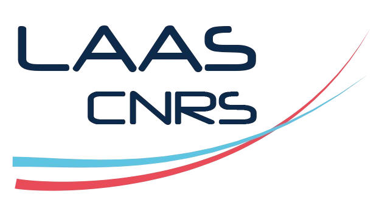
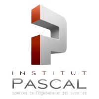
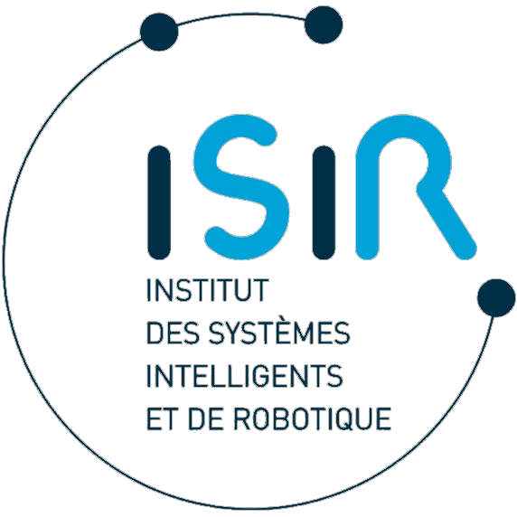

Modélisation & analyse de l'espace occupé par un robot manipulateur mobile
Développement sous ROS 2 d'algorithmes prédictifs de volume spatial à court terme pour interdire toute collision homme-robot en milieu industriel perturbé.
Laboratoire : LAAS-CNRS (Toulouse), Équipe RAP
Encadrant : Martin Mujica - mmujica@laas.fr
Période : Avril/Septembre 2025 - 6 mois

Implémentation de contrôleurs cartésiens (vitesse & impédance) sur robot Franka FR3
Développement d'une architecture ouverte de contrôle cinématique et dynamique temps réel pour la manipulation d'objets déformables et l'apprentissage par imitation.
Laboratoire : Institut Pascal, Université Clermont Auvergne (UCA)
Encadrant : Alkhatib Mohammad - mohammad.alkhatib@uca.fr
Période : Année Académique 2025-2026

Stage M2
Dernière mise à jour : mai 2026
Caractérisation et modélisation de l'incertitude des bras robotiques pour la manipulation
Optimisation et fiabilisation de l'algorithme de saisie QD Grasp sur robots réels via métrologie optique, synchronisation temporelle fine et alignement géométrique 6DoF déterministe.
Laboratoire : ISIR, Sorbonne Université (Paris)
Encadrants :
Stéphane Doncieux - stephane.doncieux@sorbonne-universite.fr
Mahdi Khoramshahi - khoramshahi@isir.upmc.fr
Mahdi Khoramshahi - khoramshahi@isir.upmc.fr
Période : Avril/Septembre 2026 - 6 mois (En cours)